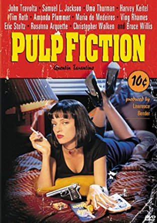
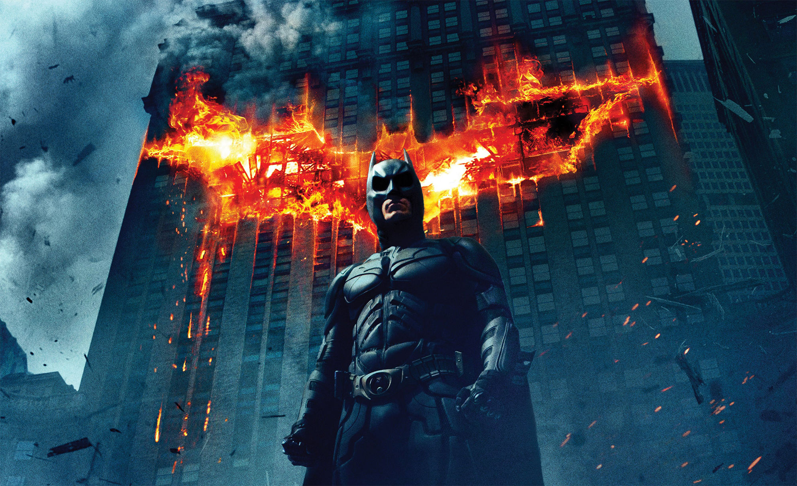
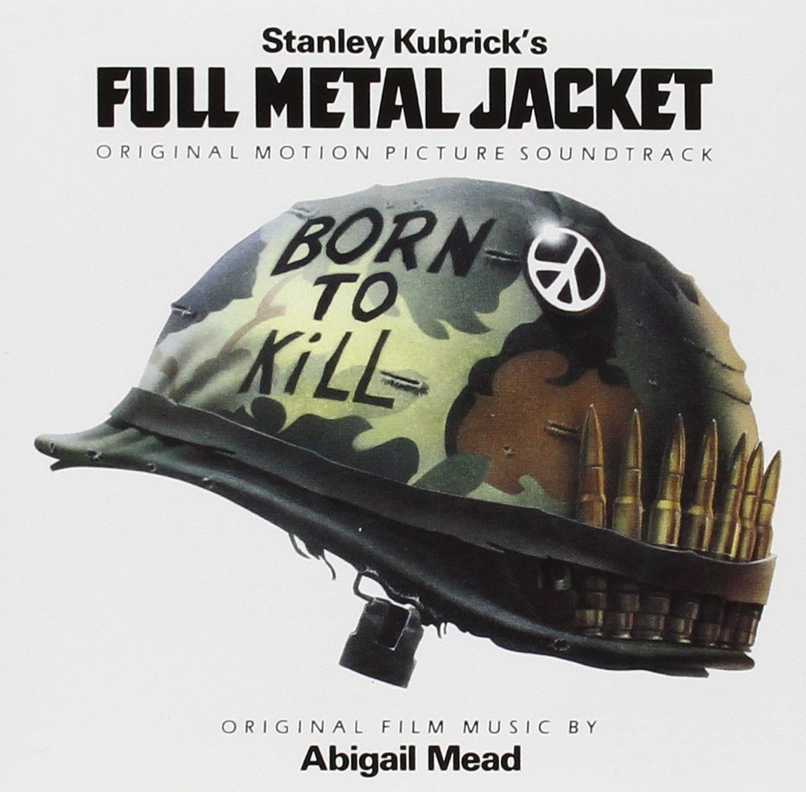
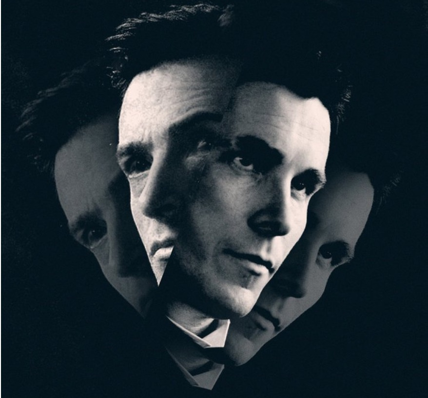
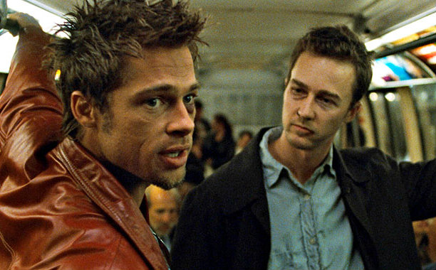

After hours of discussion, the editors of Mediafy have finally come to an agreement. This is our top 5 movies of all time.

1. Pulp Fiction

Writing a top 5 movie list without one of Quentin Tarantino's movies would be insane. Pulp Fiction is a cult classic, and for a good reason. This movie has the perfect build up, amazing, long dialogues and just the right amount of action. Most of you have probably seen it already, and if you haven't, it should be on the top of your watchlist.
2. The Dark Knight

Superhero movies are usually good action, but rarely Academy Award winning. The second movie in Christopher Nolan's Batman trilogy is this good. Heath Ledger delivers maybe the most iconic portayal of a movie villain of all time, and Christian Bale is simply the perfect Batman. Unlike other superhero movies The Dark Knight is rather dark, and not predictable and filled with clichés.
3. Full Metal Jacket

Probably the best war movie ever made, and probably will stay the greatest war movie of all time. Stanley Kubricks portayal of the marine force being trained and sent to Vietnam shows just how horrible a war can be, and how the training and battles will change the soldiers for ever. The first half of the movie takes place in a training camp, and the other half in Vietnam.
4. The Prestige

Christopher Nolan's second movie on this top 5 list. That says a lot about the British director. This movie is about two rivalry illusionist played by Christian Bale and Hugh Jackman. Even David Bowie have a role in this movie. The result is just absolutely amazing. Through the enitire movie you are the victim of a magic trick without even knowing.
5. Fight Club

An insomniac office worker and a devil-may-care soapmaker form an underground fight club that evolves into something much, much more. Starring Brad Pitt and Edward Norton.